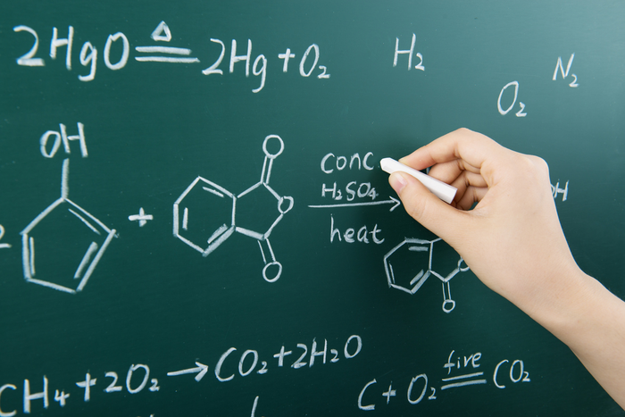

Hóa học hữu cơ

Image source: Topic 1 image sources
| Vietnamese | Hóa học hữu cơ |
|---|---|
| English | Organic chemistry |
| Pronunciation | /ɔːrˈɡæn.ɪk ˈkem.ə.stri/ or /ɔːrˈɡænɪk ˈkɛmɪstri/ or /ɔːrˈɡænɪk ˈkemɪstri/ |
| Word type | Danh từ (Noun) |
Meaning (Vietnamese)
Hóa học hữu cơ là ngành hóa học chuyên nghiên cứu các hợp chất hữu cơ
Meaning (English)
Organic chemistry is a subdiscipline within chemistry involving the scientific study of the structure, properties, and reactions of organic compounds and organic materials
Example
Organic compounds form the basis of all known life and constitute the majority of known chemicals
Các hợp chất hữu cơ tạo nên nền tảng của mọi dạng sống và cấu thành phần lớn các chất hóa học.
Another definition from the notes
Phân ngành hóa học nghiên cứu cấu trúc, tính chất, thành phần và phản ứng hóa học của các hợp chất hữu cơ.
A branch of chemistry that studies the structures, properties, compositions, and chemical reactions of organic compounds.
Another definition from the notes
Ngành hóa học nghiên cứu các hợp chất chứa carbon, cấu tạo, tính chất và phản ứng của chúng.
The branch of chemistry that studies carbon-containing compounds, their structures, properties, and reactions.
Another definition from the notes
The branch of chemistry studying organic compounds.
Source of information: English Wikipedia; Topic 1 notes (see Sources)